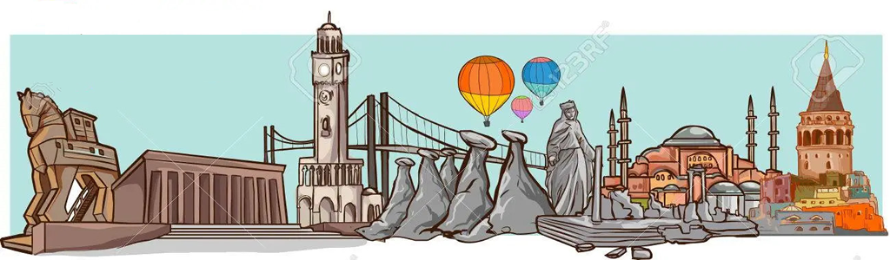

|  | |
| ANKARA | Kastamonu, Türkiye Cumhuriyeti'nin Karadeniz Bölgesi'nde yer alan Kastamonu ilinin merkez şehridir. Gökırmak'ın bir kolu olan Karaçomak Deresi vadisinde kurulu bulunan şehrin denizden yüksekliği 774 metredir. Evliyalar şehri olarak da bilinen Kastamonu Anadolu'daki en eski şehirlerden biridir, antik çağ ve Türk-İslâm dönemine ait birçok tarihi eser vardır. Kastamonu Kalesi, Atabey Camii, Şeyh Şaban-ı Veli Türbesi, Yanık Sultan Türbesi, Nasrullah Camii, saat kulesi ve buna benzer birçok tarihi eser mevcuttur. Çivisiz yapı mimari olarak yapılan Mahmut Bey Camii de buradadır. Kastamonu kent merkezinde ayrıca Türkiye'de açılan ilk "Kent Tarihi Müzesi" bulunmaktadır. Kastamonu Saat Kulesi, Sultan II. Abdülhamit zamanında, şehrin doğusunda bulunan yamaç üzerine Kastamonu Valilerinden Abdurrahman Nureddin Paşa tarafından 1884-1885 yıllarında yaptırılmıştır. Kulenin saati de Avrupa'dan getirtilmiştir. Kastamonu'da yapılan çekme helvası tüm ülke içinde meşhurdur. Kastamonu isminin türemesi hakkında birçok fikir vardır; Bir görüşe göre Kastamonu şehri ismini, Hitit döneminde aynı bölge için kullanılan Kastama isminden almıştır. Kastama ismi zamanla Kastamonu'ya dönüşmüştür.[1] Bir başka görüşe göre Kastamonu şehri ismini, Gas ve Tumanna kelimelerinin birleşiminden almıştır. Gaslar ya da bilinen adıyla KaşkalarKastamonu'nun ilk yerleşimcilerindendir. Tumanna ise o dönemde Kastamonu üzerinde bulunan bir şehir/bölge ismidir. Bu iki kelimenin birleşimi, zamanla Kastamonu şeklini almıştır.[2] Üçüncü bir görüşe göre ise Kastamonu şehri ismini, Kastra ve Komnen kelimelerinin birleşiminden almıştır. Kastra kelimesi Latince "kale" demektir. Komnenler ise, bir Bizans Hanedanı olup bu bölgenin Bizans dönemindeki yerleşimcileridir. Bu iki kelime zamanla Kastamonu şeklini almıştır.[3] |
| ISTANBUL | |
| KONYA | |
| KASTAMONU | |
| ZONGULDAK | |
| AYDIN | |
| WEB TASARIM: Yusuf Yaman Iletisim icin tiklayiniz. | |